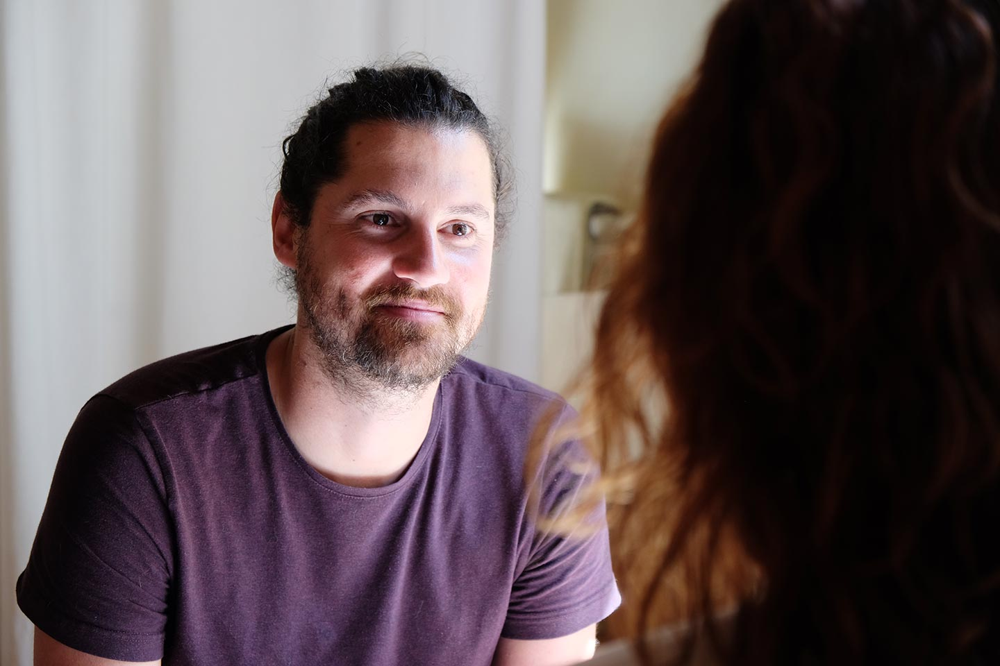
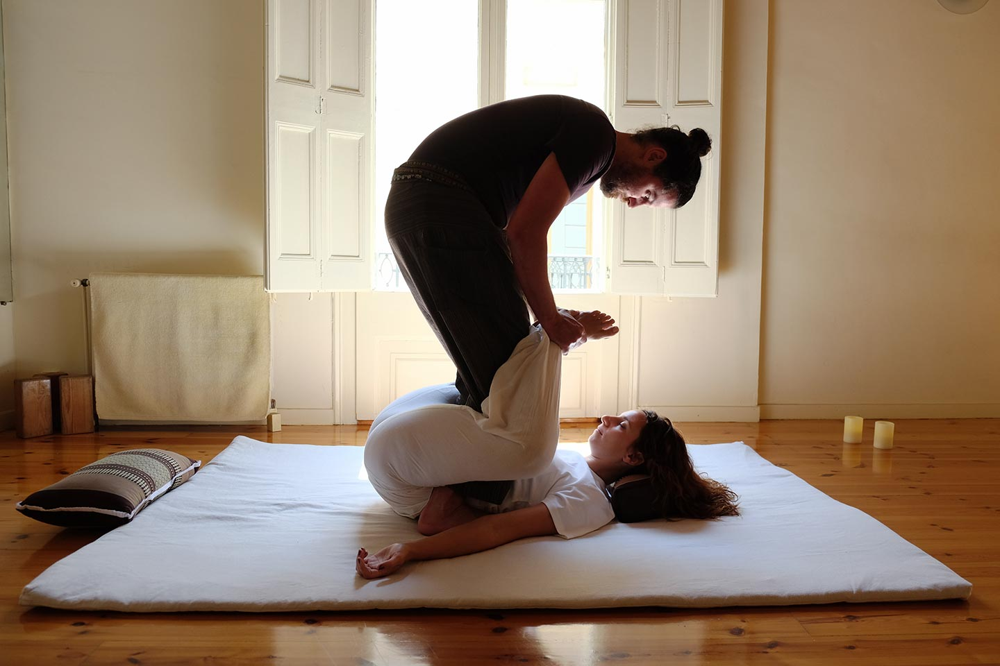

En mi ADN tengo impreso el afán a la exploración de lo que este mundo tiene para ofrecernos. Mi último periplo me ha donado algo mágico que no puedo ignorar. Desde el primer día que sentí los efectos del masaje tailandés me absorbió; cambié mi trayectoria y actualmente puedo decir alto y claro que soy un masajista tailandés.
Me considero una persona de naturaleza curiosa y abierta a recibir y ver diferentes maneras de vivir que nos rodea. Por ello, considero que me adapto con rapidez a nuevas dimensiones. Puede que por ello en su día decidí y me tiré de cabeza a la piscina, el sector de los masajes. Muchas cosas han cambiado en mi para bien. El cuerpo y el bienestar del otro es mi nueva ruta a seguir.
Esta manera de ser debe está relacionado con mi pasado, mi infancia. Desde mis 3 meses de edad he vivido en el extranjero en diferentes países. Pienso que el haber cambiado tantas veces de países y culturas me han proporcionado una perspectiva abierta y en especial me ha brindado la oportunidad de conocer a personas muy diversas. Para mi las personas son las que hacen una vida plena, interesante y amena.
Por ello trabajar directamente con personas me es un gran placer. Hay mil y un millón maneras de trabajar con personas, pero para mi, que mejor manera de conectar con un individuo que con el contacto directo. Especialmente poder compartir ese momento dorado en el cual esa persona se relaja y apaga la razón para poder escucharse asi mismo y dejarse llevar. Yo estoy encantado de ser el acompañante de orquesta.


SI LA MONTAÑA NO VIENE A MAHOMA, MAHOMA VA A LA MONTAÑA
Motivaciones
& Trayectoria
Se dice que “la vida da muchas ” y es cierto. Para bien o para mal hace la vida más interesante, en el que todos disponemos de varias oportunidades. En un momento dado descubrí el masaje tailandés y doy gracias a ello todos los días. Aquí podréis ver mi trayaectoria como mis motivaciones para tomar este camino.
Me considero una persona de naturaleza curiosa y abierta a recibir y ver diferentes maneras de vivir que nos rodea. Por ello, considero que me adapto con rapidez a nuevas dimensiones. Puede que por ello en su día decidí y me tiré de cabeza a la piscina, el sector de los masajes. Muchas cosas han cambiado en mi para bien. El cuerpo y el bienestar del otro es mi nueva ruta a seguir.
Esta manera de ser debe está relacionado con mi pasado, mi infancia. Desde mis 3 meses de edad he vivido en el extranjero en diferentes países. Pienso que el haber cambiado tantas veces de países y culturas me han proporcionado una perspectiva abierta y en especial me ha brindado la oportunidad de conocer a personas muy diversas. Para mi las personas son las que hacen una vida plena, interesante y amena.
Por ello trabajar directamente con personas me es un gran placer. Hay mil y un millón maneras de trabajar con personas, pero para mi, que mejor manera de conectar con un individuo que con el contacto directo. Especialmente poder compartir ese momento dorado en el cual esa persona se relaja y apaga la razón para poder escucharse asi mismo y dejarse llevar. Yo estoy encantado de ser el acompañante de orquesta.